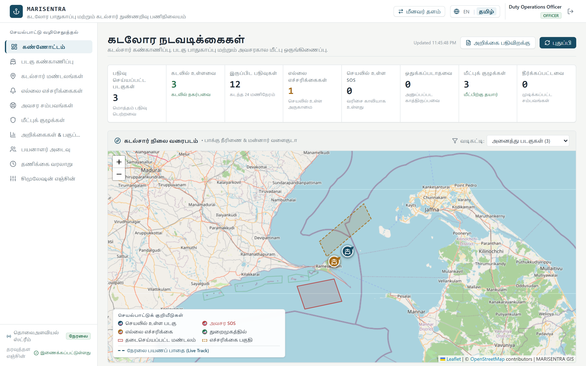

MARISENTRA
MARITIME SAFETY.
A dedicated maritime operations platform engineered for Tamil Nadu's coastal fishing communities — combining live Leaflet vessel tracking, IMD cyclone alerts, Tamil voice SOS triggers, and Coast Guard SAR dispatch.

MARITIME RESCUE & SAFETY TELEMETRY FOR COASTAL FISHERMEN.
Traditional fishermen face unpredictable sea conditions, international maritime boundary disputes, and engine failures with minimal communication infrastructure. MARISENTRA provides real-time radar and automated distress beacons.
Coastal Operations Centre
Real-time maritime command dashboard displaying registered vessels at sea, active harbor departures, and wind speed telemetry.
Fisherman Safety Map
Interactive Leaflet marine chart featuring international maritime boundary lines (IMBL), shallow reef zones, and safe harbor corridors.
Tamil Voice Assistant
Hands-free speech recognition supporting native Tamil audio commands (e.g. 'ஆபத்து' / 'வானிலை') for rough-sea operation without touch screens.
Emergency SOS Dispatch
One-touch distress beacon broadcasting precise GPS coordinates, vessel registration number, and crew manifest to Coast Guard SAR stations.
SAR Incident Management
Coordinated search grid generator, rescue vessel assignment matrix, and survivor medical status tracking.
Cyclone & Weather Radar
Direct integration with regional IMD meteorological advisories, wave height alerts, and gale-force wind warnings.
HOW IT WORKS.
Geospatial telemetry and emergency voice dispatch platform built with FastAPI and React 19.
Vessel Telemetry
Vessel transponder or mobile app sends GPS fix and heading.
Geofence Audit
Leaflet checks distance against IMBL boundary and hazard zones.
Weather Correlation
Overlays IMD wind and wave forecasts onto active vessel paths.
Distress Beacon
Voice SOS or manual button triggers Coast Guard priority alert.
SAR Mission Hub
Calculates optimal search grid and tracks dispatched rescue boats.
APPLICATION SCREENSHOTS.
Live screens captured from the running application. Click any image to view full size, or follow setup instructions in the GitHub repository.
MARITIME SYSTEM SPECS & CAPABILITIES.
Key modules, rules, safety checks, and automated test results documented in the repository.
| Subsystem | Technical Implementation | Verified Capability |
|---|---|---|
| Voice Recognition | Web Speech API with ta-IN acoustic models | Hands-free emergency voice trigger |
| Geofencing Engine | Turf.js + Leaflet marine boundary layers | Instant IMBL crossing alert warnings |
| Distress Protocol | FastAPI async dispatcher + WebSocket feeds | Sub-second Coast Guard notification |
| Verification Suite | Pytest automated integration test suite | 15 / 15 automated tests passed |
CORE TECHNOLOGIES.
Frameworks, databases, visualization tools, and testing libraries used in MARISENTRA.
FUTURE ENHANCEMENTS.
Upcoming improvements planned for MARISENTRA.
EXPLORE SOURCE & DOCS.
View the complete codebase, sample datasets, quick-launch scripts, and automated test suites on GitHub.